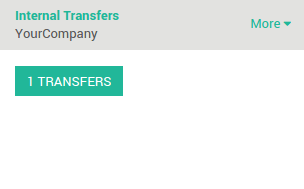

概述
在很多公司，很必要对接收的货物进行检查。目的是检查接收的货物和与供应商达成的质量标砖一致。因此，在收货的过程中添加一个质检步骤就变得很有必要。
YuanCloud使用路径精确地定义如何处理不同的接收步骤。该配置可以在仓库层面完成。默认的，收货是一步完成，通过变更配置可以允许2步或者3步收货。
3步流程如下：在收货区域接收货物，然后转移他们到质检区域。当质检过程完成后，就可以把货物从QC区域转移到库存。当然，你可以更改数量并且只转移符合质量要求的产品到库存然后把质量不好的产品退回
这个情景会在本文档解释。
配置
使用高级路径
要管理路径，进入菜单项 。

确保路径选项**使用规则产品的高级路径**有勾选。然后点击**应用**来保存变更。
确保**每个仓库管理多库位**被勾选到。
如何在收货中添加质量控制步骤？
进入菜单项 然后选择需要变更收货方式的仓库。
默认的，仓库是一步收货(直接收货入库)。
在把产品转移到库存之前添加质量控制步骤，点选**卸货在收货区域，在入库之前通过质检区域(3步)**。

如何控制收货？
如何处理收货？
在**采购**应用中，创建一个**询价单**。点击**确认订单**按钮。你可以看到有一个**收货单**在采购订单的右上角的状态按钮上和该采购订单关联。这是接收步骤。
进入**存货**然后点击**收货**看板上的**# 待收**链接。

点击打开你想要完成的收货单。点击**确认**完成从**供应商**库位到**WH/收货区域**的调拨。
已经完成了收货步骤并且在**WH/IN**单上面的状态栏位显示**完成**。产品已经从**供应商**库位移动了**收货区域**库位，这样下一步(移动到质检区域)就可以操作了。
如何把产品从收货区域移动到质检区域？
进入**库存**仪表盘。你会看到有一个已经就绪的转移(移动到质检区域的调拨)和一个在等待的移动(在质检之后的往库存移动的调拨)。点击**内部调拨**的**# 转移**链接完成质检。

点击你想要处理的调拨单
点击**确认**完成从**库存／收货区域**到**库存／质检区域**的调拨。
已经完成了内部调拨步骤并且 WH/INT**页面上部的状态显示为**完成。现在收货已经可以被控制了。
如何处理质检？
回到**库存**的仪表盘中。等待状态的调拨单现在已经可以转移了，在**内部调拨**的仪表盘卡上点击**#调拨 [UNKNOWN NODE problematic]并完成质检过程。
点击最后一个调拨并完成。点击**确认**完成从**库存／质检区域**到**库存／库存**的调拨。
已经完成了质检步骤并且**内部调拨单**页面上方的状态栏位显示**完成**。收货过程很好的的到了控制并且货物已经进入仓库。